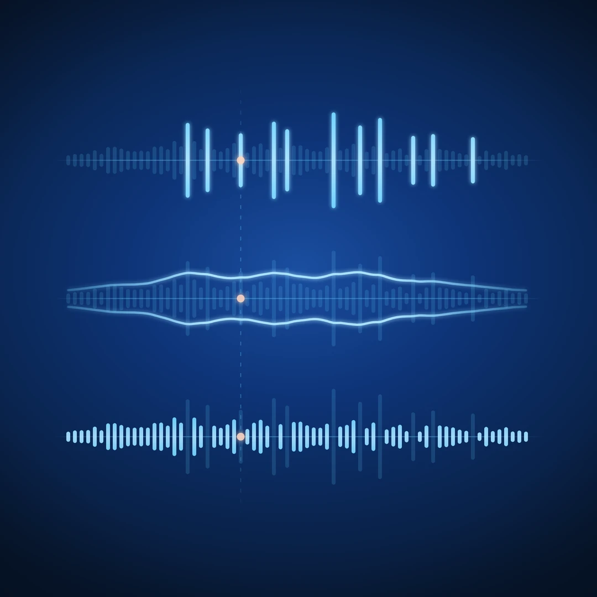

How to Hear Everyday Sounds as Sound Design Material

You record someone crumpling a sheet of paper. On playback, it sounds exactly like someone crumpling a sheet of paper. You save the file and move on.
Listen again. There are small, sharp cracks inside the movement, a rough rustle underneath, and an uneven rhythm as the paper folds and releases. A few seconds of an ordinary action contain several qualities you could build with.
Recognising the source is useful. Describing what you hear gives you more ways to use it.
In A Sound Is Not a Sample Yet, we looked at the decisions that make a recording usable. Here, we go one step earlier: how to recognise creative possibilities before you start editing.
1. Name the source, then describe the sound
"Paper crumpling" tells you what happened. "Dry, brittle, irregular" tells you something about how it might work in a project.
Keep both descriptions. The source name helps you find the recording again. The audible qualities help you make connections to things that look nothing like the original object.
A useful first exercise is to describe a recording without naming its source:
- Keys falling onto a table: bright, scattered, ringing.
- A chair sliding across the floor: rough, sustained, uneven.
- Water dripping into a bowl: rounded, hollow, intermittent.
These descriptions depend on the actual recording. Keys on fabric will sound different from keys on glass. Use the words your ears suggest, rather than the qualities you expect the object to have.
With the paper recording, "irregular crackle" might suggest a percussion detail. "Dry friction" might suggest movement across a surface. The object has stayed the same; the possible roles have expanded.
2. Follow how the sound moves
A sound's character comes partly from how it changes over time.
Listen to the paper again and follow its movement. Does it begin abruptly or build gradually? Are the small cracks spaced apart or packed together? Does it stop suddenly, or settle through a few quieter movements?
Try listening for just one property on each pass:
- Beginning: how quickly the sound arrives.
- Density: how sparse or crowded the small events feel.
- Development: whether it swells, slows, pulses, or changes direction.
- Ending: how it releases or fades away.
These are listening questions, not separate tracks hidden inside the file. Several qualities can overlap at the same instant.
A quick squeeze of paper may give you a compact burst. Slowly twisting the same sheet may produce a longer, changing texture. Before opening an effect, try changing the action itself. You may be able to perform the shape you need.
3. Listen for contrasts within the recording
The most useful detail is not always the loudest one.
In the paper recording, notice the sharp cracks against the softer rustle. Which draws your attention? Does the quieter movement connect the cracks into one gesture? Would losing that movement also lose something you liked?
Other recordings offer different contrasts: a dull impact followed by a bright rattle, a steady hum interrupted by a wobble, or a close scrape surrounded by distant activity.
Describe those relationships before deciding what to change. "The rattle overwhelms the impact" is a more useful starting point than "this needs processing." It tells you what you want the listener to notice.
You do not need to hear every detail separately. Sometimes the relationship between them is the sound's identity.
4. Give the same sound different jobs
Once you have a description, give the recording a role. For the paper, try three possibilities:
| Possible role | What to listen for | A simple test |
|---|---|---|
| Percussion detail | Short cracks and uneven accents | Place a brief passage around a simple beat. |
| Movement for picture | A gesture that starts, builds, and stops | Put it under a short animation or object movement. |
| Background texture | Rustle that adds activity without dominating | Play a longer passage quietly under a sustained musical sound. |
These are experiments, not guaranteed transformations. The recording may work beautifully in one role and fail in the others.
Listen to what happens in context. Does it reinforce the rhythm or clutter it? Does the movement follow the picture? Does the texture add interest or pull attention away?
The answers give you a reason to edit. You can now judge a change against a specific purpose.
5. Process with a listening question
Start with one question: "Can this feel less brittle?" "Can the movement last longer?" "Can the small accents sit behind the main rhythm?"
Make one change, then compare. A level adjustment or a different performance may be enough. Other ideas may need editing or effects. Preserve the source so you can return to it as your choices develop.
Where practical, compare at similar listening levels. A louder version can seem more impressive even when the particular quality you wanted has not improved.
Sometimes a large transformation is exactly the goal. The useful habit is being able to say what the change contributes.
A five-minute listening exercise
Choose one safe, repeatable action: fold paper, move a zipper, turn a handle, or roll a small object across a table.
- Record a few variations, changing speed or force.
- Listen once and identify the source and action.
- Listen again and write three descriptive words without naming the object.
- Pick one change over time and one contrast you can hear.
- Try a short passage in a beat or against a moving image.
Keep a note about what worked. "Paper — sparse crackles, useful behind a beat" is more helpful when you return than "interesting recording."
The short version
- Keep the source name, and add words that describe what you hear.
- Listen to the sound's movement as well as its tone.
- Notice relationships between prominent and quieter details.
- Try a creative role before choosing the processing.
- Judge the result inside the project where it will be used.
The next time you record something ordinary, give it a second listen before filing it away. Describe one quality, imagine one use, and try it. That is enough to begin.